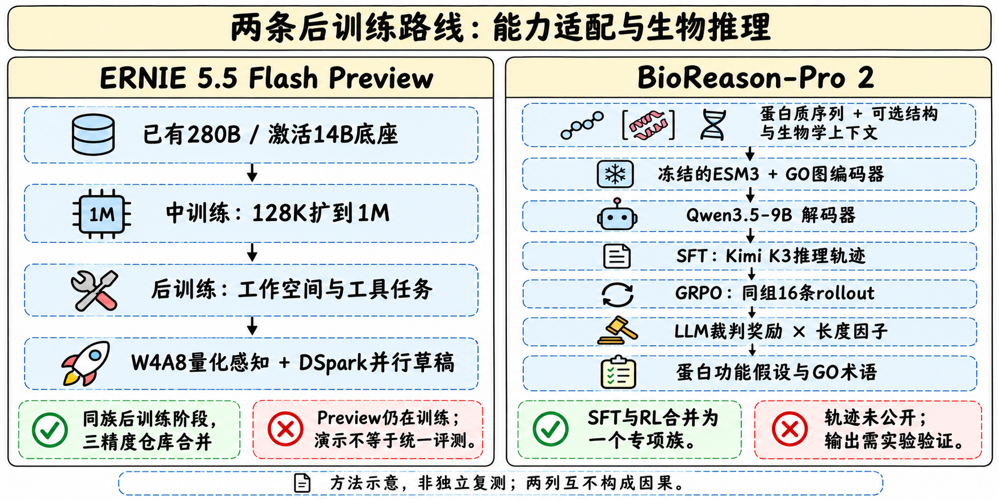
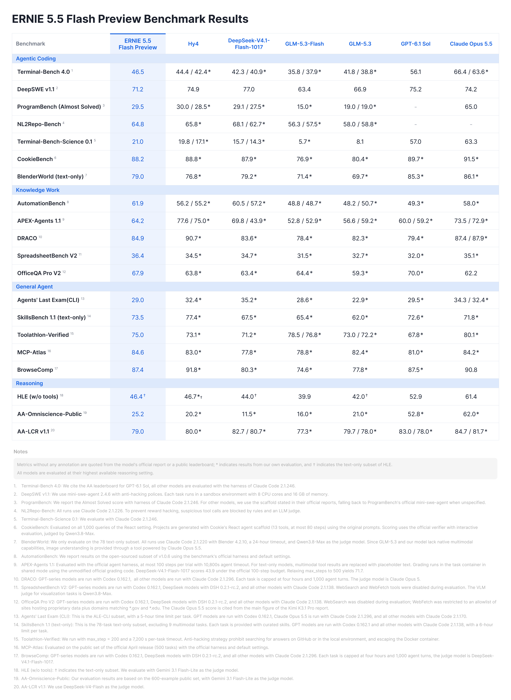

ERNIE 5.5 Flash Preview开放权重 — API预览后的发布阶段

从Base到可部署Preview
| 项目 | 官方卡 |
|---|---|
| 参数 / 层 | 280B，总激活14B；43层=1dense+42MoE |
| 专家 | 512 routed top10 +1shared |
| 注意力 | 37HCA（每128历史token压缩一条cache）+6MLA-DSA |
| 隐层 / 词表 | 4096 /201216 |
| 上下文 | 1048576；中训练由128K扩到1M |
| 默认精度 | blockwiseFP8；routed experts MXFP4 W4A8；FP8 KV；FP4 DSA indexer |
| 发布SKU | 默认FP4专家、FP8、BF16；都带DSpark草稿头 |
W4A8 QAT在后训练内模拟与推理一致的粒度、scale和舍入，避免另行校准数值不匹配。非专家仍blockwiseFP8，不能称“全模型4bit”。DSpark并行提出一块token再由主模型验证；ECHO是自回归逐步MTP，两者对不同熵输出有取舍。当前Preview只带DSpark，后续支持两者的承诺不能写成已交付。7步ECHO平均接受长度>5.5和在线蒸馏DSpark生产接受长度再提高>10%是不同实验。
6个DSA层选择Top2048历史位置；head routing减少indexer头计算，阈值预筛精确剔除低候选，卡称1M上下文TopK环节加速40%，不能外推全模型吞吐40%。低并发建议最多7token草稿，高并发2–3，需以真实接受率、batch和任务熵验证。
Agent数据与案例的意义
官方称知识工作训练含30万workspace、1000万参考文件、40余文件类型；视频创作15万环境与1000余skills。文本模型写脚本调用Blender/CAD/FFmpeg、检索并使用外部资产。11小时UE5.8武侠游戏、近100小游戏、两agent机场/飞机场景是案例；个别视频使用Seedance2.5、静态背景来自图像工具，必须保留工具与预置资产贡献。对Agent训练可研究“看不到画面时把playtest反馈变成代码可测不变量”，但无总体任务样本分布，不推断成功率。
20项评测与跨harness限制
| 维度 | ERNIE Preview分数（全部20项） |
|---|---|
| Agentic Coding | TerminalBench4 46.5；DeepSWE1.1 71.2；ProgramBench AlmostSolved29.5；NL2Repo64.8；TBScience0.1 21.0；Cookie88.2；BlenderWorld text79.0 |
| 知识工作 | Automation61.9；APEXAgents1.1 64.2；DRACO84.9；SpreadsheetBenchV2 36.4；OfficeQAProV2 67.9 |
| 通用Agent | AgentsLastExam CLI29.0；SkillsBench1.1 text73.5；ToolathlonVerified75.0；MCPAtlas84.6；BrowseComp87.4 |
| 推理 | HLE无工具text-only46.4；AAOmnisciencePublic25.2；AALCR1.1 79.0 |
原完整比较表随模型卡保留：如TB4的Hy4为44.4报告/42.4厂商自测，Opus5.5为66.4/63.6；不能任意挑较低对手值。最高可用reasoning设定；有官方harness则用其，否则GPT放Codex、部分DeepSeek放DSH、其他放ClaudeCode。故跨列同时改变模型与harness。Automation61.9高于Opus自测58.0，但TB4和TBScience明显落后；此差异应保留。
运行契约与研究判断
SGLang示例tp4/attn-dp4、context131072、128maxrunning、DSPARK、ernie55解析器；vLLM0.32.0配baidu插件、DP4专家并行、FP8KV、FP4indexer、7草稿token。它们默认启动128K，不是“只能128K”。卡片一处说可enable_thinking:false，接口段却说always thinks，保留这处契约不一致，实际应验证具体runtime与chat template。reasoning_content和content分开，不把思考文本混入答案评分。
官方来源与关联资料
📊 中文Poster：中文Poster
官方原图与机制对照

